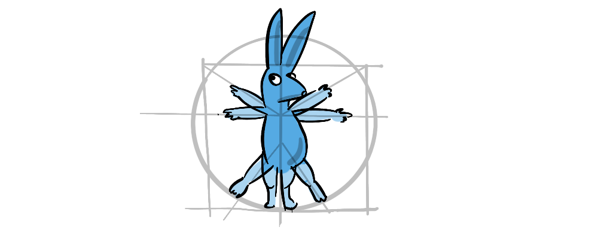
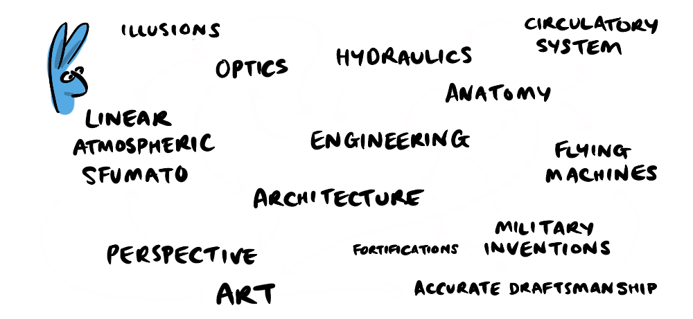

In the next post we will look at some of the pitfalls of first principles thinking and and make an argument for arguing by analogy.
In the next post we will look at some of the pitfalls of first principles thinking and and make an argument for arguing by analogy.

I've always been fascinated by polymaths—people who thrive in different domains of expertise, like Leonardo Da Vinci who excelled at art alongside engineering and hydraulics, anatomy, optics, and architecture or Benjamin Franklin who, while developing many of the foundational ideas of modern democracy, was also busily inventing new scientific technologies like bi-focal lenses.
These "Renaissance Men" seem to have been able to do the impossible—to explore both broadly and deeply.
This ability was no doubt due to a prodigious intelligence and curiosity, but it was also about their methodology. By becoming experts in multiple fields, polymaths are able to create breakthroughs in one domain through their understanding of another. Leonardo's art was informed by his knowledge of anatomy and optics
Benjamin Franklin's broad political understanding of society's needs, made him better able to cater to those needs through invention.
But polymaths are not merely a relic of a past age—when it was possible for one person to "know everything", as was reputed of John Stuart Mill (1815-1873) the last man to know everything there was to know in the world .
Kurzweil is a name synonymous with the Kurzweil brand of electric keyboards which were the first to synthesise accurate acoustic sound, and introduced weighted keys to complement the true sound with the true feel of a real piano. But Ray Kurzweil also combined his understanding of sound with linguistics and neuroscience to pioneer speech recognition technology, and to become a leading voice in futurism today.
And then there's our potentially problematic polymath Elon Musk, who also has his pinkies in a plethora of pies: from e-commerce to electric cars, rockets, batteries, solar, transport infrastructure, brain-computer interfaces and lately social media and… politics.
But there is an interesting element to Musk's methodology that I think has been over-played.
In a lengthy (as always) 2015 ‘Wait, But Why?' post Elon's Special Sauce , Tim Urban explains the importance of Elon Musk's "First Principles" approach, crediting this methodology for his innovative proflicacy.
First principles thinking has always been a key feature of philosophy—asking fundamental questions and building forward from there. It was codified by René Descartes in his contribution to Foundationalism—the notion that there are foundational assumptions we can interrogate with reason alone. I loved this idea when I first discovered it in a continuing education philosophy class—it gave context for Descartes' famous credo.
"Cogito ergo sum" (I think therefore I am)—René Descartes
Descartes stripped away all possible assumptions about reality until he came to what he saw as a foundational truth—that, even if he can't prove that he is a physical being, or that his perception of the outside world reflects reality, or even if an all-powerful evil-demon is not deceiving him in every facet of his life, he can still be sure that, if he is thinking, if he is aware at all, he must in some sense exist.

Well, humans have evolved behavioural efficiencies, that save us time and effort, and one of those efficiencies is to follow what the crowd is doing or thinking. This works 99% of the time in ways that are so common they become invisible to us—we wait in line, we gauge our speed based on surrounding traffic, we can even take part in entirely non-sensical behaviours given the right social pressures like standing in a waiting room when a bell rings .
"Insanity is doing the same thing over and over again and expecting different results."—Rita Mae Brown (Sudden Death, 1983)
Though crowd-sourcing your behaviour makes for a valid strategy most of the time, what happens when you confront a novel problem, or want to escape a stagnant situation? To change outcomes, we need to change strategies, and to do this requires us to question our underlying behaviours. And if we really want to make profound changes we might need to question our underlying assumptions about… everything. This is first principles thinking.
Urban explains that Musk took this approach when considering rockets. After 50 years of the same formula for creating rockets had led to a stagnant space program, Musk, like Descartes had 400 years prior, began discarding assumptions left, right and centre…
Musk realised rocketry was essentially a materials problem, if he could source the necessary materials, or redesign a rocket to use materials he could source, then he could create rockets. If he could then recover parts, then that would solve a large chunk of the ongoing materials problem.
When it came to electric cars, he realised the bottleneck was battery capacity—another materials problem. So, he started by developing batteries. Musk explicitly identifies this as a first principles approach.
I think generally people's thinking process is too bound by convention or analogy to prior experiences. It's rare that people try to think of something on a first principles basis—Elon Musk
Musk makes an important point, but it's not the whole story. First of all there are some major risks involved in first principles thinking—throwing out the baby of time-tested lessons from history, with the bathwater of dogma.
In the next post we will look at some of the pitfalls of first principles thinking and and make an argument for arguing by analogy.